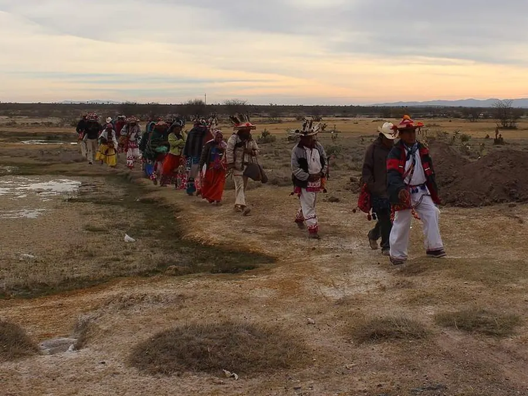
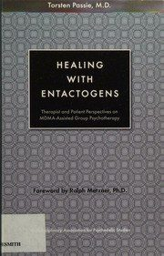
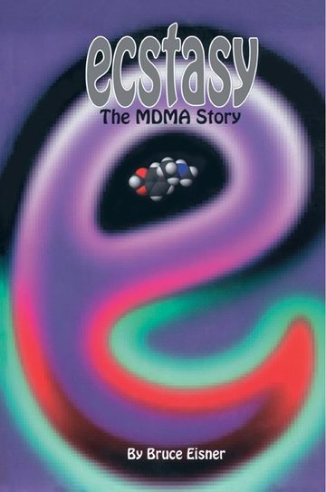

Conocer
Qué es y para qué la busca la gente.
Qué es
Unas horas con menos miedo y más confianza
La MDMA es una molécula de la familia de las fenetilaminas. No es un psicodélico clásico: apenas cambia la percepción y actúa, sobre todo, en lo emocional. Por eso se la llama empatógeno, «que genera empatía», o entactógeno, una palabra que viene a decir «que produce un tocar por dentro»1.
En la terapia asistida, la MDMA no es la protagonista. Es una ayuda: durante unas horas baja el miedo, crece la confianza y la mente sigue clara. En ese espacio, la persona puede acercarse a recuerdos y emociones que normalmente evita, y no lo hace sola.
La MDMA no hace la terapia. La hace la persona, acompañada; la MDMA le ayuda a no apartar la mirada.
Por qué puede ayudar
Quienes la han acompañado durante décadas lo explican con tres ideas sencillas:
- 1Menos miedo
Se calma la alarma del cuerpo. Un recuerdo difícil puede mirarse sin que el cuerpo reaccione como si volviera a ocurrir.
- 2Más confianza
Crece la sensación de estar a salvo con quien acompaña, y la ternura hacia uno mismo.
- 3Otra manera de recordar
Lo que se mira con menos miedo deja de pesar igual: el recuerdo sigue ahí, pero ya no duele del mismo modo.
No es lo mismo que el éxtasis
Es la misma molécula, pero otro mundo. Muchos de los problemas que se asocian al éxtasis tienen que ver con cuánto, cómo y dónde se toma.
- Sustancia pura y cantidad medida.
- Preparación y conversación antes.
- Lugar tranquilo y compañía todo el tiempo.
- Pocas veces y muy espaciadas.
- Pastillas de contenido desconocido.
- Sin preparación.
- Calor, baile, mezclas.
- A menudo, repetición.
En qué se diferencia de otras medicinas
Con la psilocibina o la LSD, la experiencia suele llevar lejos de lo cotidiano. Con la MDMA, la persona sigue siendo ella misma, con la mente clara y capaz de conversar; lo que cambia es la relación con lo que siente. Por eso se ha usado tanto para el trauma y para los vínculos, donde hace falta poder mirar sin desbordarse.
Cómo actúa en el cuerpo, sus efectos y sus interacciones están en la guía de MDMA. En las guías de terapia puedes compararla con las demás.
Para qué se busca
Lo que la gente trae
Desde finales de los años setenta, a las consultas en las que se acompaña con MDMA han llegado personas muy distintas. Algunas traían un dolor concreto; otras, ningún diagnóstico: venían a conocerse. Esto es lo que más se ha trabajado con ella.
- Heridas que vienen de lejos
Es lo que más se ha acompañado: experiencias que dejaron miedo en el cuerpo y que aquí pueden mirarse desde un lugar seguro.
- Pérdidas y duelos
Despedirse, decir lo que quedó sin decir y dejar que la pena se mueva con ternura.
- La pareja y los vínculos
Fue uno de sus primeros usos: dos personas que vuelven a escucharse sin defenderse, y lo que llevaba años atascado se puede hablar2.
- El miedo y la angustia
Muchas personas llegan con un miedo de fondo que no saben de dónde viene. La MDMA no lo tapa: ayuda a mirar lo que suele haber debajo.
- Una enfermedad grave
Algunos terapeutas la han acompañado para hacer las paces con lo que viene y para despedirse en paz.
- Conocerse y abrir el corazón
En aquellas primeras consultas mucha gente no venía por un problema: venía a mirarse con más verdad y más cariño.
No es una promesa ni sirve igual a todo el mundo. Lo que ayuda es el conjunto: la persona y su momento, quien acompaña, la preparación y lo que se hace después.
Vivirlo
Cómo se vive, qué suele quedar y lo que cuentan quienes han pasado por ella.
Cómo se vive
El miedo se ablanda y la mente sigue clara
Cada experiencia es única, pero en los relatos de terapeutas y de personas acompañadas, desde los primeros años hasta hoy, se repiten algunas cosas2,3:
- El miedo se ablanda. Aparece una sensación de seguridad y de calidez hacia uno mismo y hacia los demás.
- Se puede volver a un recuerdo difícil y verlo como algo que pasó, desde un presente seguro.
- La mente está clara: no suele haber visiones ni pérdida de control, y después se recuerda lo vivido.
- El cuerpo se relaja y, a veces, suelta tensiones antiguas.
- Muchas personas hablan de amor, de gratitud y de aceptación; algunas, de experiencias de sentido profundo o espirituales.
«La apertura del corazón y la apertura de los sentimientos.»
El arco de una sesión
Una sesión ocupa buena parte del día y no se vive toda igual. Muchas personas describen un recorrido parecido a este:
- La llegada
Hay nervios, y es normal. Se repasa la intención y se resuelven las últimas dudas.
- La apertura
El cuerpo se afloja y el miedo se ablanda. Aparecen calidez y confianza.
- El trabajo
El tramo más largo. A ratos hacia dentro, con música y antifaz; a ratos, hablando.
- El regreso
La intensidad baja poco a poco. Quedan calma, cansancio y, a menudo, gratitud.
- Los días siguientes
Más sensibilidad y sueño. Lo vivido sigue moviéndose por dentro.
También puede haber nervios al principio, o emociones intensas por el camino. No son un fallo: son parte del material con el que se trabaja, y por eso siempre hay alguien al lado.
«Llena de belleza y amor, de buen sentir y de aceptación de uno mismo.»
Lo que suele quedar
Lo que la gente dice que cambia
La sesión pasa; lo que importa es lo que queda. Cada proceso es distinto, pero de los primeros terapeutas a los seguimientos de hoy vuelven las mismas cosas2,3,4.
- El pasado pesa menos
El recuerdo sigue ahí, pero deja de mandar. Se puede hablar de ello sin que el cuerpo se dispare.
- Más ternura hacia uno mismo
Menos culpa y menos vergüenza. Mirarse con los ojos con los que se mira a alguien querido.
- Vínculos más cercanos
Conversaciones pendientes que por fin se tienen. Más facilidad para pedir, poner límites y dejarse querer.
- Un cuerpo más habitable
Menos alerta y más presencia en lo cotidiano. Muchas personas cuentan que vuelven a descansar.
- Ganas de vivir
Volver a hacer planes, probar cosas nuevas y cuidarse. A veces, también, dejar lo que servía para tapar.
- Sentido
Para algunas personas, gratitud y una sensación de pertenecer que no conocían.
Con los pies en el suelo. No le pasa a todo el mundo ni de golpe. A veces llega poco a poco y pide trabajo después, y hay quien no nota un cambio grande. En aquel primer recuento, todas las personas contaron también alguna molestia, casi siempre pasajera2.
Voces
Quienes lo han vivido
Gente conocida y gente anónima, de aquí y de fuera. Cada nombre lleva a la entrevista, el reportaje o el vídeo donde lo cuenta.
«Sentí que mi alma volvía a encajar en su sitio.»
-
«El ensayo con MDMA ha cambiado mi vida. Ahora me siento vivo.»
Nathan McGeeParticipó en uno de los grandes estudios
Arrastraba desde los cuatro años un trauma que nada aliviaba. Casi cuatro décadas después, pudo mirarlo acompañado.
MIT Technology Review en español, 2021 -
«Por primera vez salí de gira sin pánico escénico.»
LordeCantante
Tenía miedo escénico desde los cinco años y lo había probado todo. Cuenta que lo trabajó en sesiones de terapia con MDMA y con psilocibina.
Rolling Stone en español, 2025 -
«Viví décadas en la angustia y el miedo sin saber qué me pasaba.»
MagdalenaChile
Creció con el miedo metido en el cuerpo. Con MDMA y, más tarde, con hongos, dice que fue como cambiar unas gafas empañadas y oscuras por unas claras.
La Tercera, 2023 -
«Sanar devuelve la capacidad de elegir.»
Marcela Ot’aloraDe paciente a terapeuta
En 1984, con 23 años, la MDMA la ayudó con un trauma que nada aliviaba. Estudió psicología transpersonal y lleva más de veinte años acompañando a otras personas; también lo hizo en el estudio de Madrid.
Chacruna, 2020 (en inglés) -
Lo que una consulta corriente no alcanzaba
Jonathan LubeckyVeterano de Irak
Volvió en 2006 con estrés postraumático. Cuenta que en las sesiones largas, sin reloj, pudo llegar a donde antes nunca llegaba.
Onda Vasca, 2026 -
«La gente se sentía de verdad liberada de su pasado.»
Bessel van der KolkPsiquiatra, autor de El cuerpo lleva la cuenta
Uno de los grandes especialistas en trauma. Firma uno de los estudios y también la probó él mismo: tumbado, con antifaz y acompañado por dos terapeutas.
CNBC, 2024 (en inglés) -
«Quiero eso para todo el mundo.»
Lori TiptonNueva Orleans
Llegó con muchas pérdidas a la espalda, nerviosa y escéptica. Cuenta que pudo volver a sus recuerdos sin el pánico de siempre, y cree que la terapia le salvó la vida.
NPR, 2019 (en inglés) -
Un terapeuta, al otro lado
Sebastián SalicruPsicoterapeuta, Tarragona
Cuenta su propia sesión en grupo: volvió un recuerdo de los cuatro años y pudo acompañarlo con ternura. Al principio se sintió desbordado; después quedaron paz, serenidad y gratitud.
Journal of Transpersonal Research, 2026 (en inglés, con resumen en español) -
No todas las historias son redondas
Hay quien mejora a medias, quien necesita más tiempo y quien pasa días difíciles después. Lo cuentan en primera persona varias personas que participaron en los estudios.
Trauma Research Foundation, 2026 (en inglés)
Verlo por dentro
Tres vídeos para asomarse a cómo es una sesión.
Las citas de otros idiomas son traducción de APDER. Son medios externos: cada enlace lleva a la fuente original.
Con cuidado
Los miedos, el camino y lo que nota el cuerpo.
Si te da miedo
Es normal. Vamos miedo a miedo
Casi todo el mundo llega con alguno. Decirlos en voz alta, antes, ya forma parte del proceso.
- «¿Y si pierdo el control?»
Con la MDMA sigues siendo tú: puedes hablar, moverte, pedir lo que necesitas y parar. No suele haber visiones ni confusión, y después recuerdas lo vivido. Mucha gente dice que se siente más ella misma.
- «¿Y si sale algo que no puedo sostener?»
Puede salir algo doloroso; a eso se va. Pero llega con menos miedo y con alguien al lado, y tú marcas el ritmo. Los momentos duros pasan, y después se trabajan con calma.
- «¿No es peligrosa?»
Los daños que se asocian al éxtasis vienen de pastillas de contenido desconocido, del calor, de las mezclas y de repetir. Aquí es otra cosa: sustancia conocida, cantidad medida, pocas veces y en calma. No es para todos los cuerpos, y por eso se habla antes de la salud y de la medicación.
- «¿Me puedo enganchar?»
No suele pasar. Quienes la acompañan cuentan que, tomada a menudo, abre cada vez menos: su sitio son unas pocas sesiones espaciadas.
- «¿Y si no noto nada o no me sirve?»
Pasa. No es una pastilla mágica: lo que cambia las cosas es el proceso entero, y a veces lo que se mueve se nota semanas después. Nadie serio promete resultados.
- «Me da vergüenza abrirme delante de alguien»
La confianza se construye antes, sin prisa. Tú decides qué cuentas y qué no. Y también vale estar en silencio.
Y si después de leer esto sigues con dudas, también está bien. No hay prisa.
El proceso
Un camino en tres tiempos
Una terapia asistida con MDMA no es una pastilla: es un camino. La sustancia se toma pocas veces; la mayor parte del trabajo es conversación, cuerpo y vida.
- 1Preparación
Conocerse y crear confianza. Hablar de la salud, de la historia personal y de la medicación. Aclarar la intención, que no es lo mismo que una expectativa, y acordar los límites y los cuidados.
- 2La sesión
Un lugar tranquilo y cuidado, música y, si se desea, un antifaz. Alguien al lado todo el tiempo. La persona marca el ritmo: a ratos habla, a ratos va hacia dentro.
- 3Integración
En los días y semanas siguientes, encuentros para dar sentido a lo vivido y llevarlo a la vida: a las relaciones, al cuerpo y a las decisiones. Las decisiones grandes pueden esperar.
Quien acompaña
Quien acompaña no interpreta ni conduce: está. Escucha, sostiene y confía en el ritmo de la persona. Los terapeutas que empezaron a trabajar con ella ya lo hacían así, y el manual que se usa hoy lo llama seguir la «inteligencia sanadora interior» de cada uno. En las tradiciones que trabajan con plantas ocurre algo parecido: siempre hay alguien con experiencia que cuida del espacio. Parece sencillo y no lo es: pide oficio, humildad y haber trabajado antes lo propio.
Lo que rodea a la sesión importa tanto como la sustancia. Lo contamos en Set y setting y en El acompañante.
Lo que cuida una sesión
Es lo que aprendieron, con los años, quienes empezaron a acompañar con ella5.
- Hablarlo antesLa salud, la medicación, la historia y la intención. La preparación es la mitad del camino.
- Saber qué se tomaQué sustancia es y en qué cantidad.
- Alguien con camino hechoPresente todo el tiempo y sin dirigir. Se acompaña mejor lo que uno ya ha atravesado.
- Límites clarosSe acuerdan antes y se respetan: el contacto es de apoyo, nunca sexual.
- Pocas veces, con tiempoLo vivido necesita semanas para asentarse antes de volver.
- Cuidar el despuésDescanso, tiempo y conversación para que lo abierto llegue a la vida.
Nadie promete curas ni presiona, y puedes parar cuando quieras.
El cuerpo y los cuidados
Lo que nota el cuerpo y cómo se cuida
Quienes la han acompañado durante décadas describen una sustancia amable cuando se toma pocas veces, en cantidad medida y con calma. Lo que se nota en el cuerpo suele ser leve y pasa pronto6.
Lo más habitual
- Tensión en la mandíbula o en los músculos, algo de náusea, menos apetito, sudor y nervios al principio.
- Durante unas horas, el pulso y la tensión suben un poco.
- Al día siguiente, a veces, cansancio o más sensibilidad, que pasan en uno o dos días.
No es para todo el mundo ni para cualquier momento
Hay cuerpos y momentos a los que no les conviene: un corazón delicado o la tensión alta, el embarazo, haber pasado por una psicosis o una manía, y algunos medicamentos, sobre todo ciertos antidepresivos. Por eso se habla de todo antes, y ningún tratamiento se deja ni se cambia por cuenta propia. Lo explicamos con calma en la guía de MDMA.
Lo emocional
Pueden aparecer emociones fuertes o recuerdos dolorosos, durante la sesión o en los días siguientes. Forman parte del proceso y se acompañan; la integración ayuda a darles un lugar.
Comprender
Una mirada humanista y transpersonal, de dónde viene, los libros y los estudios.
Una mirada humanista y transpersonal
Aceptarse, darse cuenta, confiar
Lo que sigue es una manera de comprender la experiencia desde dos corrientes de la psicología que ponen a la persona en el centro.
La aceptación que transforma
Quienes acompañan con MDMA lo hacen, sobre todo, sin dirigir. Es muy cercano a la psicología humanista de Carl Rogers: cuando alguien se siente aceptado sin condiciones, deja de defenderse y empieza a crecer. Con la MDMA, esa aceptación se vive también desde dentro, hacia uno mismo.
«La curiosa paradoja es que, cuando me acepto tal como soy, entonces cambio.»
Darse cuenta, aquí y ahora
La terapia Gestalt habla de darse cuenta: estar en contacto con lo que uno siente en este momento, sin la defensa de siempre. Y de asuntos inconclusos: lo que no pudo decirse, llorarse o cerrarse a su tiempo. Muchos relatos de sesiones se parecen a eso. Algo que quedó pendiente encuentra, por fin, su lugar, y a menudo lo hace primero en el cuerpo.
Mirar la propia sombra
En el lenguaje de Jung, la sombra es aquello de nosotros que preferimos no ver. Quienes han acompañado sesiones con MDMA, como la terapeuta Ann Shulgin, cuentan que la sustancia quita el miedo a mirarla y deja paso a la compasión: lo que aparece se puede abrazar en lugar de rechazar.
El sanador interior
La psicología transpersonal, con Stanislav Grof, habla de un sanador interior: una sabiduría propia que sabe hacia dónde ir cuando se le da espacio. En las sesiones, algunas personas viven experiencias de unidad, de sentido o de reconciliación que van más allá de su biografía. Claudio Naranjo, pionero de la psicoterapia con estas sustancias, observó con la MDA, prima química de la MDMA, algo que hoy se repite en los relatos:
«El paciente retrocede y, simultáneamente, conserva la conciencia de su yo actual.»
Un atisbo de la cumbre
El monje benedictino David Steindl-Rast, que estudió psicología antes de entrar en el monasterio, lo contó con la imagen de una montaña cubierta de niebla: por un instante se despeja y quien sube alcanza a ver la cumbre. Atajos no hay, decía; el camino sigue siendo trabajo de cada día. Pero ya se sabe hacia dónde va.
«La sustancia te da una visión, un atisbo de lo que buscas.»
David Steindl-Rast, citado por Jamie Wheal en Recapture the Rapture (2021). Traducción de APDER.
De dónde viene
Una medicina joven en una práctica muy antigua
Buscar alivio y sentido en un estado ampliado de consciencia, con alguien que cuida del proceso, es una de las prácticas más antiguas de la humanidad. Hay plantas y hongos que se usan así desde hace miles de años, en ceremonias y con saberes propios. Qué es una medicina, un sacramento o una droga lo ha decidido cada cultura y cada época a su manera, y aún hoy cambia de un lugar a otro.

La MDMA es una recién llegada a esa historia. Se sintetizó en Alemania en 1912 y pasó décadas olvidada. En 1977, el químico Alexander Shulgin se la dio a probar a Leo Zeff, un psicólogo de Oakland (California) que estaba a punto de jubilarse. Zeff dejó la jubilación, la llamó «Adam», porque sentía que devolvía a un estado de inocencia original, y la dio a conocer a otros terapeutas. Se calcula que formó a unos 150 y que, entre todos, acompañaron a miles de personas7.
Aquellos terapeutas trabajaron con discreción, con personas, parejas y grupos, y fueron aprendiendo qué cuidaba y qué no. De esos años salen los primeros relatos y los primeros libros.
Después llegó la investigación, que ha ido poniendo a prueba con los métodos de nuestro tiempo lo que aquellos terapeutas contaban. España fue pionera: en el año 2000 empezó en Madrid el primer ensayo clínico del mundo de psicoterapia asistida con MDMA, dirigido por el psicólogo José Carlos Bouso8. Y Rick Doblin y su equipo llevan décadas impulsándola.
Lo que cuentan los libros
Para leer con calma
Buena parte de lo que se sabe de esta terapia está en libros: los de quienes la acompañaron, los de quienes la vivieron y los de quienes la han contado. Casi todos tienen ficha en la Biblioteca.
- Through the Gateway of the HeartSophia Adamson (ed.) · 1985 · en inglés
Relatos en primera persona de los primeros años: quienes la vivieron cuentan qué se abrió y qué cambió.
- The Secret Chief RevealedMyron Stolaroff · 2004 · en inglés
Conversaciones con Leo Zeff sobre cómo acompañaba: la preparación, los acuerdos, el grupo y el cuidado.
 PiHKALAlexander y Ann Shulgin · 1991 · en inglés
PiHKALAlexander y Ann Shulgin · 1991 · en inglésMitad historia de amor, mitad cuaderno de laboratorio. Leo Zeff aparece en ella con otro nombre.
- El viaje sanadorClaudio Naranjo · 1973 · en español
Psicoterapia con MDA, prima de la MDMA, y con otras sustancias, contada desde dentro por uno de sus pioneros.

Healing with EntactogensTorsten Passie · 2012 · en inglésTerapeutas y pacientes cuentan cómo trabajan y qué viven en la terapia de grupo.
- The History of MDMATorsten Passie · 2023 · en inglés
La historia entera, desde 1912 hasta las consultas de hoy.

Ecstasy: The MDMA StoryBruce Eisner · 1989 · en inglésUno de los primeros libros sobre su historia, sus efectos y su uso en terapia.
 Ecstasy: The Complete GuideJulie Holland (ed.) · 2001 · en inglés
Ecstasy: The Complete GuideJulie Holland (ed.) · 2001 · en inglésTerapeutas, médicos e investigadores reúnen en un volumen lo aprendido.
 I Feel LoveRachel Nuwer · 2023 · en inglés
I Feel LoveRachel Nuwer · 2023 · en inglésLa historia de la MDMA, de las consultas a la pista de baile y de vuelta.
 Acid TestTom Shroder · 2014 · en inglés
Acid TestTom Shroder · 2014 · en inglésLos pioneros que llevaron esta terapia a veteranos de guerra.
- Medicina psiquedélicaJosé Carlos Bouso · 2025 · en español
Un manual para pacientes, terapeutas y curiosos.
Lo que han visto los estudios
La ciencia, una voz más
Desde el año 2000 también se estudia con los métodos de la ciencia, sobre todo con personas que llevaban años con un trauma que no cedía.
2de cada3
personas con un trauma de años dejaron de tener el diagnóstico al terminar la terapia con MDMA, en los dos estudios más grandes9,10.
Y hay un dato que dice mucho: quienes hicieron la misma terapia sin MDMA también mejoraron bastante. El acompañamiento hace buena parte del trabajo; la MDMA ayuda a que llegue más hondo. Es lo mismo que contaban los primeros terapeutas, ahora con números.
El detalle de los estudios está en Investigación terapéutica y en la guía de MDMA.
Seguir
Lo que cuentan los medios, primeros pasos y dudas frecuentes.
En los medios
Cada vez se habla más, y con calma
Periódicos, televisiones e instituciones llevan años contando esta terapia. Esta es una selección, casi toda en español.
Prensa y televisión en España
- El País22 de marzo de 2022¿Una terapia con MDMA? Los expertos debaten el uso de drogas psicodélicas en tratamientos médicos
Especialistas explican qué puede aportar y qué dudas quedan.
- El Mundo10 de mayo de 2021Una investigación apunta que cada vez estamos más cerca de incluir el éxtasis en la psiquiatría convencional
La noticia del primer gran estudio, el día en que se publicó.
- El Confidencial13 de mayo de 2021Así es como el MDMA y la psilocibina pueden revolucionar la psiquiatría
Un repaso a lo que estas terapias pueden cambiar en la salud mental.
- laSexta4 de febrero de 2023Australia se convierte en el primer país en aprobar el MDMA y las setas alucinógenas para tratar enfermedades de salud mental
La noticia del primer país que la incorporó a su sanidad.
- El Salto6 de noviembre de 2025José Carlos Bouso: «Creo que de aquí a dos años habrá medicinas de MDMA, psilocibina o LSD»
Entrevista al pionero español de la psicoterapia asistida con MDMA.
- Science Media Centre EspañaFECYT · 2026Psicodélicos y salud mental: preguntas y respuestas sobre su investigación
Investigadores españoles explican qué se sabe y qué no.
Psicología y salud
- InfocopConsejo General de la Psicología · 8 de mayo de 2025Terapia con psicodélicos en la práctica clínica: ¿revolución o teoría?
La mirada de la psicología profesional española.
- Psiquiatria.com2 de junio de 2023La psicoterapia asistida con psicodélicos supondrá un cambio de paradigma para la psiquiatría
El psiquiatra Óscar Soto-Angona, del Hospital Vall d’Hebron, explica por qué la sustancia es un catalizador.
- Redacción MédicaPsiquiatría«El mercado psiquiátrico español tendrá MDMA, psilocibina y LSD en 3 años»
Psicólogos, psiquiatras y neurocientíficos españoles hablan del futuro de estas terapias.
- Centro Nacional para el TEPTEstados Unidos · en españolTerapia asistida por MDMA para el trastorno de estrés postraumático (TEPT)
La explicación del centro de referencia en trauma, actualizada en noviembre de 2026.
En el mundo
- The New York TimesEn español · 15 de mayo de 2021Una revolución psicodélica llega a la psiquiatría
El reportaje que acompañó al primer gran estudio.
- CNN ChileSana Mente · octubre de 2022Rick Doblin y el uso terapéutico de psicodélicos: «El MDMA ayuda a las personas a procesar el trauma»
Entrevista a quien lleva décadas impulsando esta terapia.
- Infobae19 de septiembre de 2023Un estudio mostró que el éxtasis puede ser útil para abordar el estrés postraumático
El segundo gran estudio, contado para el público general.
- TEDCharla · 2019 · subtítulos en españolRick Doblin: el futuro de la psicoterapia asistida con psicodélicos
Dieciséis minutos para entender por qué la MDMA puede ayudar a mirar un trauma.
Para ver
- NetflixSerie documental · 2022Cómo cambiar tu mente, capítulo sobre la MDMA
Basada en el libro de Michael Pollan, dedica un episodio entero a la MDMA y a quienes la han recibido en terapia.
- MDMA The MovieVídeo · en inglésDead Dog on the Left: guerra, amistad y sanación
La historia de dos veteranos, contada por ellos.
Son medios externos: APDER no es responsable de su contenido. Los vídeos solo se conectan con YouTube (youtube-nocookie.com) si pulsas para verlos. Selección revisada en noviembre de 2026.
Primeros pasos
Si algo de esto te llama
Es normal sentir curiosidad, esperanza o dudas. Algunas ideas para seguir con calma:
- 1Infórmate sin prisa
Lee, mira y escucha a quienes lo han vivido. Tienes por dónde empezar en Voces, en los libros y en los medios.
- 2Háblalo con alguien de confianza
Tu terapeuta, si lo tienes, o una persona cercana que te conozca bien. Decirlo en voz alta ayuda a ver qué buscas.
- 3Escucha tu momento
Estas experiencias remueven. Piden una etapa de la vida con cierto sostén y tiempo para lo que venga después.
- 4Ve a tu ritmo
Informarse ya es un paso. Y sentir que ahora no es el momento, también.
Y si lo que has leído te ha tocado, quizá el primer paso no sea una sustancia, sino una conversación. Empezar una terapia, con medicinas o sin ellas, ya es cuidarse.
Preguntas frecuentes
Dudas que suelen quedar
¿Es lo mismo que tomar éxtasis?
No. Es la misma molécula, pero no la misma experiencia. En terapia se usa MDMA pura y en cantidad medida, con preparación, en un lugar tranquilo y con alguien al lado. Las pastillas de una fiesta pueden llevar mucha más cantidad u otras sustancias, y se toman con calor, baile y mezclas.
¿Es algo nuevo?
La sustancia es joven; la práctica, muy antigua. Entrar en un estado ampliado de consciencia para sanar, con alguien que acompaña, se hace desde hace miles de años con plantas y hongos, en muchas culturas. La MDMA se usa en terapia desde los años setenta.
¿Cuántas veces se toma?
Pocas. Se usa en unas pocas sesiones a lo largo de varios meses, siempre dentro de un proceso con muchos encuentros sin ella. No es algo de cada día.
¿Cuánto dura una sesión?
Ocupa buena parte del día. El efecto dura unas horas y después hace falta tiempo para descansar: por eso se reserva la jornada entera y la persona no se va sola.
¿Es para todo el mundo?
No, y tampoco para cualquier momento. Un corazón delicado o la tensión alta, el embarazo, haber pasado por una psicosis o una manía y algunos medicamentos piden otra cosa. Por eso se habla de todo antes.
¿Y si tomo medicación?
Conviene decirlo siempre antes. Algunos antidepresivos apagan casi todo el efecto de la MDMA, y con otros medicamentos, como los IMAO, no debe combinarse. Ningún tratamiento se deja ni se cambia por cuenta propia. Lo explica la guía de MDMA.
¿Puede ayudar con la ansiedad o la tristeza?
Mucha gente ha llegado a ella por eso. Quienes acompañan cuentan que la MDMA no tapa el miedo ni la tristeza: ayuda a mirar lo que suele haber debajo, como una herida, una pérdida o algo que no se pudo decir, desde un lugar más seguro. Cada proceso es distinto y no hay promesas; lo que más cuenta es el conjunto: el momento de la persona, quien acompaña y lo que se hace después.
¿Qué pasa después de la sesión?
Muchas personas sienten que lo vivido sigue trabajando por dentro. Los días siguientes pueden traer cansancio, sensibilidad o mucha claridad. La integración ayuda a entenderlo y a llevarlo a la vida diaria.
¿APDER ofrece esta terapia?
No. APDER es una asociación de divulgación: reúne y cuenta lo que se sabe. No ofrece terapias ni sesiones, ni recomienda a nadie.
Referencias
- Nichols DE. Entactogens: how the name for a novel class of psychoactive agents originated. Front Psychiatry. 2022;13:863088. PMC
- Greer G, Tolbert R. Subjective reports of the effects of MDMA in a clinical setting. J Psychoactive Drugs. 1986;18(4):319-327. MAPS
- Barone W, Beck J, Mitsunaga-Whitten M, Perl P. Perceived benefits of MDMA-assisted psychotherapy beyond symptom reduction: qualitative follow-up study of a clinical trial for individuals with treatment-resistant PTSD. J Psychoactive Drugs. 2019;51(2):199-208. DOI
- van der Kolk BA, Wang JB, Yehuda R, et al. Effects of MDMA-assisted therapy for PTSD on self-experience. PLoS One. 2024;19(1):e0295926. DOI
- Passie T. The early use of MDMA (‘Ecstasy’) in psychotherapy (1977–1985). Drug Sci Policy Law. 2018;4:2050324518767442. DOI
- Colcott J, et al. Side-effects of MDMA-assisted psychotherapy: a systematic review and meta-analysis. Neuropsychopharmacology. 2024. Springer
- Wolfgang AS, Fonzo GA, Gray JC, et al. MDMA and MDMA-assisted therapy. Am J Psychiatry. 2025;182(1):79-103. American Journal of Psychiatry
- Bouso JC, Doblin R, Farré M, Alcázar MA, Gómez-Jarabo G. MDMA-assisted psychotherapy using low doses in a small sample of women with chronic posttraumatic stress disorder. J Psychoactive Drugs. 2008;40(3):225-236. MAPS
- Mitchell JM, Bogenschutz M, Lilienstein A, et al. MDMA-assisted therapy for severe PTSD: a randomized, double-blind, placebo-controlled phase 3 study. Nat Med. 2021;27(6):1025-1033. PubMed
- Mitchell JM, Ot’alora G M, van der Kolk B, et al. MDMA-assisted therapy for moderate to severe PTSD: a randomized, placebo-controlled phase 3 trial. Nat Med. 2023;29:2473-2480. Nature Medicine
Página revisada el 26 de noviembre de 2026.
Antes de seguir. Esta información es divulgativa. La preparamos con cuidado a partir de fuentes científicas y de reducción de riesgos, pero puede tener errores o quedarse antigua. No es consejo médico ni sustituye a un profesional sanitario, sobre todo si tomas medicación o tienes algún problema de salud. APDER no anima al consumo de ninguna sustancia y no se hace responsable del uso que se haga de esta información. Si ves un error, escríbenos a info@apder.org.